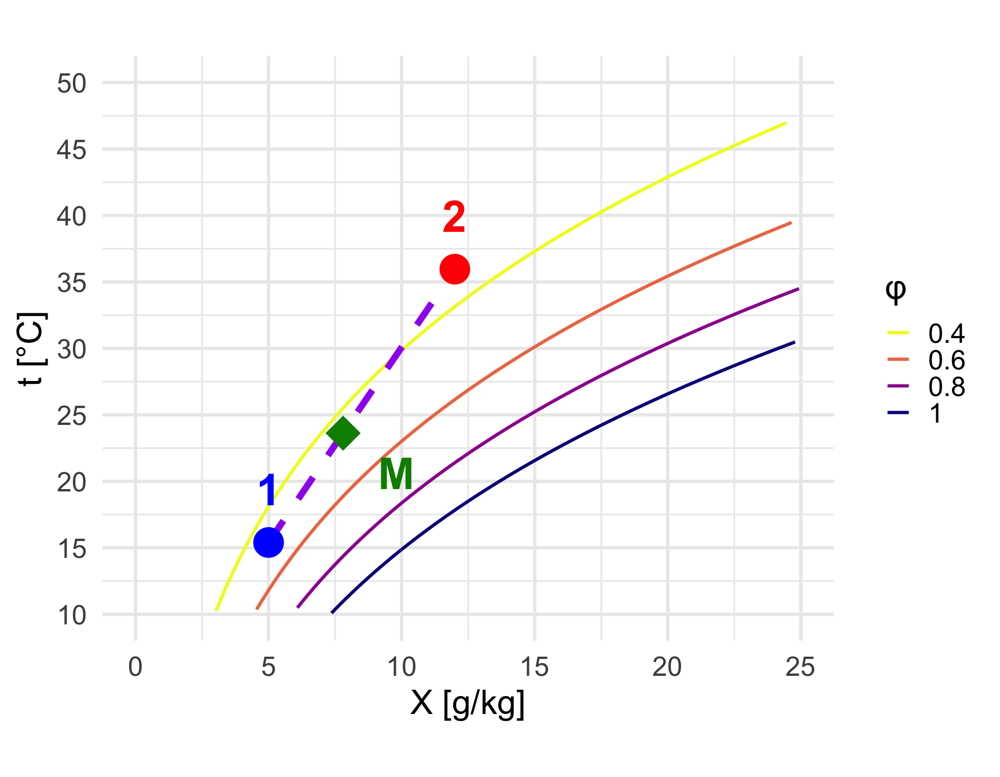
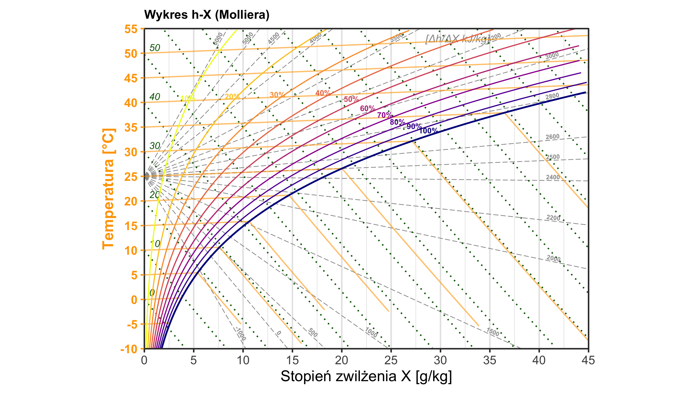
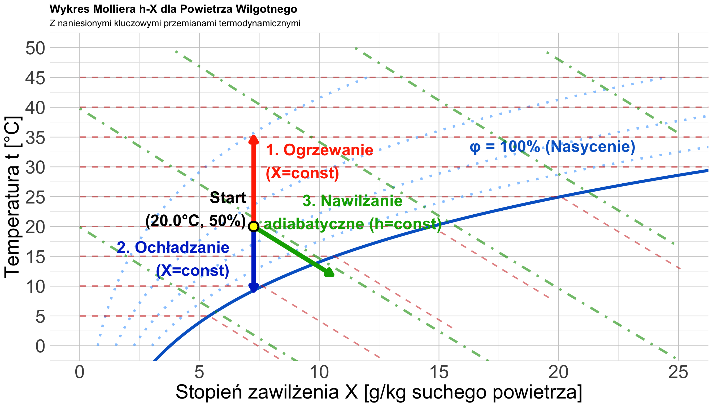
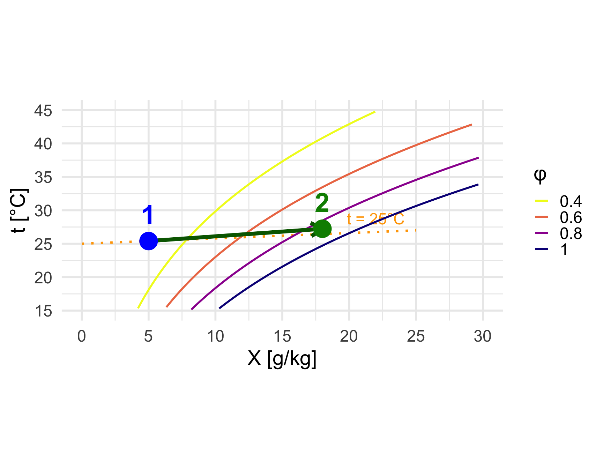
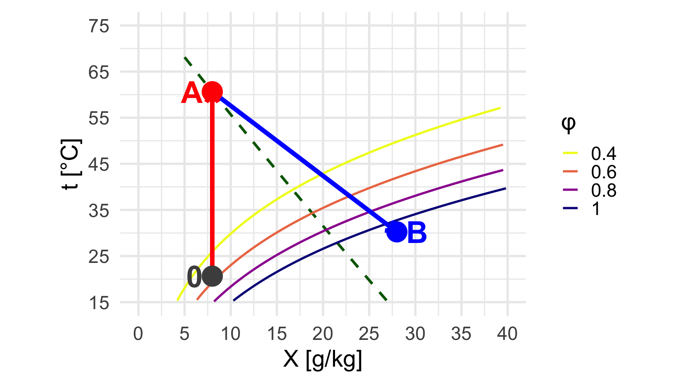
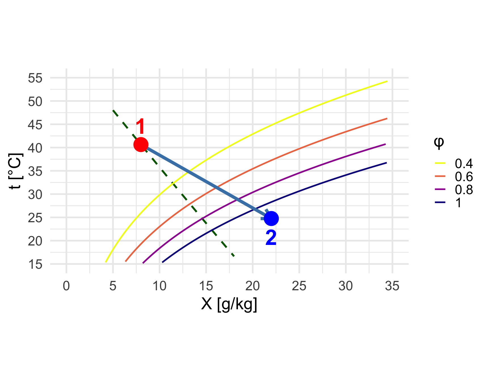
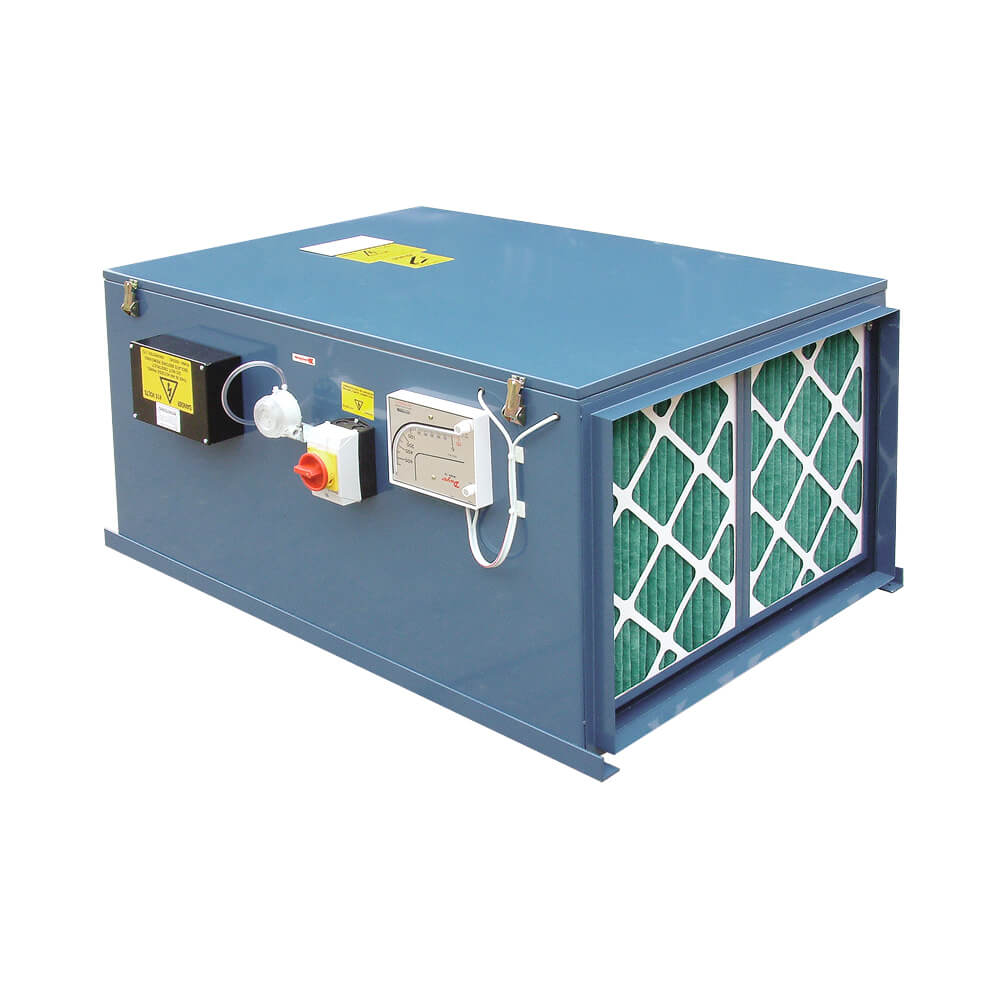

W12: Powietrze Wilgotne
Psychrometria i Wykres Molliera
prof. UPP dr hab. inż. Marek Urbaniak
Wydział Inżynierii Środowiska i Inżynierii Mechanicznej


Agenda Wykładu
- Skład Powietrza Wilgotnego (Prawo Daltona)
- Parametry Wilgotności (\(\varphi\), X)
- Entalpia Powietrza Wilgotnego (\(h\))
- Konstrukcja Wykresu Molliera h-X
- Przemiany Charakterystyczne
- Pomiary i Aparatura (Psychrometry, Nawilżacze)
- Bilans Masy i Energii
1. Skład Powietrza Wilgotnego
Powietrze wilgotne to jednorodna mieszanina gazów zbliżonych do doskonałych (\(N_2, O_2, Ar\)) oraz pary wodnej.
Prawo Daltona
Ciśnienie całkowite (barometryczne) jest sumą ciśnień cząstkowych: \[ p = p_g + p_p \] Gdzie:
\(p_g\) – ciśnienie cząstkowe powietrza suchego; \(p_p\) – ciśnienie cząstkowe pary wodnej.
Stan pary wodnej:
- Para przegrzana: \(p_p < p_{nasycenia}\) (Typowy stan w pomieszczeniu).
- Para nasycona: \(p_p = p_{nasycenia}\) (\(RH = 100\%\)).
- Mgła: Powietrze przesycone (zawiera kropelki cieczy).
2. Parametry Wilgotności
Inżynierowie (i nie tylko) używają dwóch definicji wilgotności:
Wilgotność Względna (Relative Humidity)
Określa, jak blisko jesteśmy stanu nasycenia (mgły). \[ \varphi = \frac{p_p}{p_{sat}(T)} \cdot 100\% \]
- \(\varphi = 0\%\): Powietrze suche.
- \(\varphi = 100\%\): Punkt rosy (powietrze nasycone).
Wilgotność Bezwzględna
Zdefiniowana jako stosunek masy pary wodnej do objętości powietrza. \[ g = \frac{m_p}{V} = \frac{p_p}{R_p T} \quad [\frac{kg_{H2O}}{m^3}] \]
2. Parametry Wilgotności
Stopień Zawilżenia (Mixing Ratio)
Stosunek masy pary (\(m_p\)) do masy powietrza suchego (\(m_g\)). \[ X = \frac{m_p}{m_g} = 0.622 \frac{p_p}{p - p_p} \quad [\frac{kg_{H2O}}{kg_{suchego}}] \]
- Kluczowe: W procesach ogrzewania/chłodzenia masa suchego powietrza jest stała, więc \(X = const\) (jeśli nie nawilżamy).
0.622 to stosunek mas molowych pary wodnej do powietrza suchego: \[ \frac{M_{H_2O}}{M_{powietrza}} = \frac{18.015}{28.97} \approx 0.622\]
3. Entalpia (\(h\))
Entalpia powietrza wilgotnego odniesiona jest do 1 kg powietrza suchego.
\[ h = h_{powietrza} + X \cdot h_{pary} \]
Przyjmując \(0^\circ C\) jako punkt odniesienia: \[ h = (1.005 \cdot T) + X \cdot (2501 + 1.86 \cdot T) \quad [\frac{kJ}{kg}] \]
Składniki:
- 1.005: Ciepło właściwe powietrza suchego (\(C_p\)) \([kJ/(kg \cdot K)]\).
- 2501: Ciepło parowania wody (\(r\)) w \(0^\circ C\) \([kJ/kg]\).
- 1.86: Ciepło właściwe pary wodnej \([kJ/(kg \cdot K)]\).
4. Wykres Molliera h-X
Standard w Europie Środkowej. Układ ukośnokątny (rozciąga obszar nienasycony).
- Oś pionowa: Temperatura \(t\) [°C].
- Oś pozioma: Stopień zawilżenia \(X\) [g/kg].
- Izentalpy (\(h=const\)): Linie ukośne (biegną pod kątem ~135°, stąd “ukośność wykresu”).
- Krzywa graniczna (\(\varphi=100\%\)): Oddziela obszar pary przegrzanej (góra) od obszaru mgły (dół).
Interpretacja Linii:
- Izotermy (\(t\)): Lekko wznoszą się w prawo, a po zetknięciu z krzywą \(varphi = 100%\) opadają równolegle do izentalp.
- Krzywe \(\varphi\): Układają się “bananowo” nad krzywą graniczną.
- Izentalpy (\(h\)): nachylone pod kątem ~135°.
- Linie Randa (promienie z “bieguna”) to linie nachylenie wektora przemiany względem osi X (zależne od medium nawilżającego).
Wizualizacja: Wykres h-X
5. Przemiany Charakterystyczne
Ogrzewanie Izobaryczne (X=const)
- Proces: Nagrzewnica.
- Wykres: Pionowo do góry.
- Efekt: Temperatura rośnie, wilgotność względna \(\varphi\) maleje (powietrze “schnie”).
Ochładzanie (X=const)
- Proces: Chłodnica (powyżej punktu rosy).
- Wykres: Pionowo w dół.
- Efekt: \(\varphi\) rośnie aż do 100% (Punkt Rosy \(t_r\)).
Suszenie (h=const)
- Proces: Nawilżanie adiabatyczne (kontakt z wodą).
- Wykres: Skośnie w dół (w stronę wyższego X).
- Efekt: Powietrze się nawilża i ochładza (energia zostaje w układzie).
5. Przemiany Charakterystyczne
Współczynnik Kierunkowy Przemiany (\(\varepsilon\))
Współczynnik kierunkowy \(\varepsilon\)
\(\varepsilon\) określa nachylenie wektora przemiany na wykresie h-X: \[ \varepsilon = \frac{\Delta h}{\Delta X} \quad \left[\frac{\text{kJ}}{\text{kg}_{H_2O}}\right] \]
Interpretacja fizyczna:
\(\varepsilon\) = entalpia właściwa medium dodawanego do powietrza (\(h_w\)).
| Medium | \(\varepsilon\) | Kierunek na wykresie |
|---|---|---|
| Lód / chłodzenie z osuszaniem | < 0 (np. -1000) | stromo w dół ↓↘ |
| Woda ciekła (~20°C) | ≈ 0–100 | wzdłuż izentalpy ↘ |
| Para nasycona (100°C) | ≈ 2500 | prawie poziomo → |
| Para przegrzana | > 2500 (np. 4500) | lekko w górę ↗ |
| Czyste ciepło (bez wilgoci) | ∞ | pionowo ↑ |
Bilans energii: \[ \dot{m}_g (h_2 - h_1) = \dot{m}_w \cdot h_w \]
Stąd: \[ \varepsilon = \frac{h_2 - h_1}{X_2 - X_1} = h_w \]
Skala Randa
Linie o stałym \(\varepsilon\) tworzą pęk promieni z “bieguna” — to skala Randa na wykresie h-X.
Przemiana 1: Mieszanie Strumieni Powietrza
Zasada
Stan wynikowy (M) leży na odcinku 1-2. Położenie zależy od stosunku masowego: \(\frac{\overline{1M}}{\overline{M2}} = \frac{\dot{m}_{g,2}}{\dot{m}_{g,1}}\)
Bilansy:
\[ X_M = \frac{\dot{m}_1 X_1 + \dot{m}_2 X_2}{\dot{m}_1 + \dot{m}_2} \]
\[ h_M = \frac{\dot{m}_1 h_1 + \dot{m}_2 h_2}{\dot{m}_1 + \dot{m}_2} \]
Zastosowania
Rekuperacja: Odzysk ciepła w centralach wentylacyjnych. Klimatyzacja: Mieszanie powietrza świeżego z recyrkulowanym. Wentylacja: Rozcieńczanie zanieczyszczeń.
Przemiana 2: Nawilżanie Parą Wodną
Zasada
Przy nawilżaniu parą (\(h_w \approx 2500\) kJ/kg) przemiana biegnie prawie poziomo (wzdłuż izotermy). \(\varepsilon = h_w \approx 2500\) kJ/kg.
Bilansy:
\[ \Delta X = \frac{\dot{m}_p}{\dot{m}_g} \]
\[ \Delta h = h_w \cdot \Delta X \]
Temperatura prawie stała!
Zastosowania
Klimatyzacja zimowa: Nawilżanie pomieszczeń ogrzewanych. Przemysł tekstylny: Utrzymanie wilgotności włókien. Drukarnie: Zapobieganie elektryzowaniu papieru.

Przemiana 3: Cykl Suszarniczy
Zasada
(A) Podgrzanie powietrza (\(X=const\), pionowo). (B) Suszenie materiału (\(h \approx const\), wzdłuż izentalpy).
Etap A: \(X_A = X_0\), \(t \uparrow\)
Etap B: \(h_B \approx h_A\), \(X \uparrow\), \(t \downarrow\)
Sprawność: \(\eta \sim (X_B - X_0)\)
Zastosowania
Suszarnie przemysłowe: Drewno, zboże, owoce. Przemysł spożywczy: Pasta, mąka, mleko w proszku. Budownictwo: Suszenie tynków i wylewek.

Nawilżanie Adiabatyczne (Wodą)
Zasada
Nawilżanie wodą (\(h_w \approx 0\)) → przemiana wzdłuż izentalpy (\(\varepsilon \approx 0\)). Temperatura spada do \(t_m\) (mokry termometr).
Bilans:
\[ h_1 \approx h_2 \]
Chłodzenie ewaporacyjne!
Zastosowania
Chłodnie kominowe: Odprowadzanie ciepła z elektrowni. Klimatyzatory ewaporacyjne: Tanie chłodzenie w suchym klimacie. Przemysł tekstylny: Nawilżanie hal produkcyjnych.

6. Pomiar Parametrów Powietrza
Psychrometr Augusta/Assmana
Dwa termometry:
- Suchy (\(t\)): Mierzy temp. powietrza.
- Zwilżony (\(t_m\)): Owinięty wilgotną tkaniną. Woda parując, chłodzi termometr.
- Zasada: Im suchsze powietrze, tym intensywniejsze parowanie i niższa \(t_m\).
- Różnica psychrometryczna \((t - t_m)\) pozwala odczytać \(\varphi\).
Higrometry
- Włosowe: (Historyczne) Włos ludzki wydłuża się pod wpływem wilgoci.
- Pojemnościowe: Zmiana stałej dielektrycznej polimeru.
- Punktu rosy: Lusterko schładzane aż do pojawienia się rosy.
Aparaty i Zastosowania
Urządzenia (AHU — Air Handling Unit)
Zastosowania
- Klimatyzacja komfortu: \(t \approx 20-24^\circ C\), \(\varphi \approx 40-60\%\).
- Technologia: Przemysł papierniczy, tekstylny, spożywczy (suszarnie), pomieszczenia czyste (elektronika).
- Wentylacja: Usuwanie zanieczyszczeń i wilgoci.
- Medycyna / Ochrona zdrowia: sale operacyjne, inkubatory, sterylizacja.

7. Bilans Masy i Energii
Dla mieszania dwóch strumieni powietrza (1 i 2) obwiązują zasady zachowania:
Równanie Ciągłości (Bilans Masy Wilgoci)
\[ \dot{m}_{g1} \cdot X_1 + \dot{m}_{g2} \cdot X_2 = \dot{m}_{g3} \cdot X_3 \] Masa pary wodnej w strumieniu wynikowym jest sumą mas cząstkowych.
Bilans Entalpii (Bilans Energii)
\[ \dot{m}_{g1} \cdot h_1 + \dot{m}_{g2} \cdot h_2 = \dot{m}_{g3} \cdot h_3 \] Energia całkowita układu zostaje zachowana (proces adiabatyczny).
Przykłady Obliczeniowe
Zadanie 1: Ogrzewanie Powietrza
Dane: Powietrze \(t_1=25^\circ C\), \(\varphi_1=50\%\) ogrzewamy do \(t_2=35^\circ C\).
- Z tablic \(p_s(25) = 3.17\) kPa \(\rightarrow p_p = 0.5 \cdot 3.17 = 1.585\) kPa.
- Ponieważ \(X=const\), to \(p_p\) się nie zmienia!
- Z tablic \(p_s(35) = 5.63\) kPa.
- Nowa wilgotność: \(\varphi_2 = \frac{1.585}{5.63} \approx 28.2\%\). Wniosek: Ogrzewanie silnie wysusza powietrze (względnie).
Zadanie 2: Parametry Powietrza
Dane: \(p=110\) kPa, \(t=30^\circ C\), \(\varphi=60\%\). * \(p_s=4.24\) kPa \(\rightarrow p_p = 2.54\) kPa. * \(X = 0.622 \frac{2.54}{110-2.54} \approx 14.7\) g/kg.
Podsumowanie W12
- Wilgotność: Rozróżniamy względną (\(\varphi\), komfort) i bezwzględną (\(X\), bilans masy).
- Entalpia: Para wodna niesie ogromną energię (ciepło utajone).
- Psychrometr: Różnica temperatur suchego i mokrego pozwala wyznaczyć wilgotność.
- Procesy: Ogrzewanie obniża \(\varphi\), nawilżanie wodne obniża \(t\).
Zadanie dla chętnych
Latem (\(30^\circ C\)) pijesz zimne piwo (\(4^\circ C\)). Dlaczego butelka “poci się”? Wyjaśnij zjawisko używając pojęcia Punkt Rosy i Ciśnienie Cząstkowe.
Termodynamika Techniczna (W12)